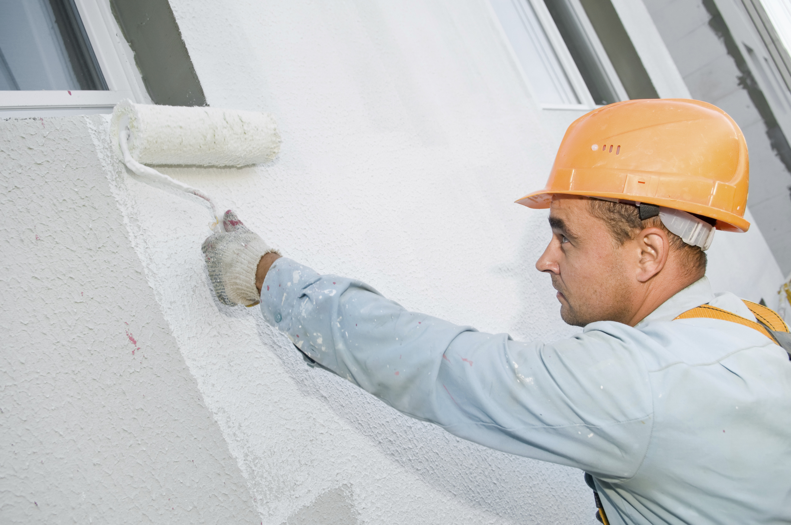

X
Aussenanstrich
Wanddeko
Innenrenovation
Reperaturen
Aussenanstrich
Arbeitsablauf einer fachgerechen Fassaden-Renovation : Untergrund : Verputztes Mauerwerk Zuerst wird die Fassade überprüft auf die Untergrundbeschaffenheit: Festigkeit, Risse, Algen- und Pillzbefall- Fassade wird gewaschen mit einem Hochdruck- reiniger - Schützen von den Bauteilen die nicht gestrichen werden - Risse werden geöffnet und mit einem elastischen Fassadenspachtel zugespachtelt. Loser Verputz : Abgeschlagen und Verputz ausgebessert - Fassade wird mit Tiefgrund vorgestrichen. Dient zur Festigung des Untergrundes. Fassade wird 2 mal mit einer Aussendispersion oder mit einer Mineralfarbe gestrichen. Arbeitsausführung bei Fassaden die mit Moos- Algen- und Pilzbefallene Flächen aufweisen Restlose Entfernung des Bewuchs von Algen und Pilzen. Mit Hochdruckreiniger und Bürste. Vorstreichen mit einem Fassadenalgizid. - Risse werden behandelt - Die Fassade wird mit einer fungizid und algizid ausgerüsteten Fassadenfarbe 2 mal gestrichen.
